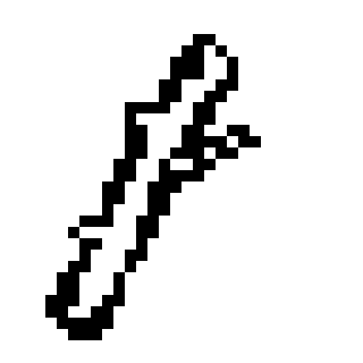
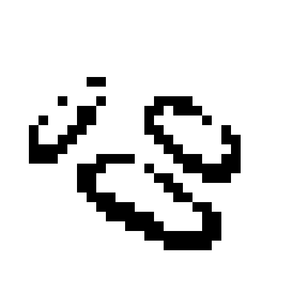
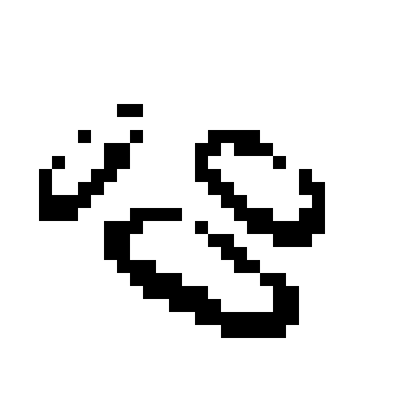

It was during recess when Noel first taught Leon about ghosts. In hushed whispers, Noel explained to a wide-eyed boy the details of trapping spirits in makeshift vessels. On a perch at the monkey bars, instructed him to search for suitable materials for the trap. Watched as his new friend obediently scoured the playground. Nodded thoughtfully every time Leon brought back a stick or piece of wood that was deemed suitable. Smiled as Leon checked on their constructed trap every recess, a hint of anticipation gracing his face.
Though no ghosts were trapped, Noel was unphased. “They might’ve followed you home,” he suggested.
Leon gaped at him.
“Don’t worry, I know how to get rid of them,” Noel assured.
▼
By the next year, they’d already forgotten their stint with ghost-hunting. It was the age of ugly dares and ding-dong ditching their apartment neighbors. Except Noel would sprint away first, leaving Leon’s petrified figure with an adult towering over him in the doorway. It wasn’t until the umpteenth door that Leon finally irritatedly confronted his friend, who was cackling in a bush in the distance. As a pittance, he was allowed to borrow Noel’s 3DS for a week. And he did so again, after the time that he was fooled into believing Noel’s beloved cat died. He hadn’t had a real pet cat at all.
“I needed the excuse to be realistic,” Noel had justified, “Mrs. Yun wouldn’t have believed my absences otherwise.”
Leon only bit his lip in response. They both knew he wouldn’t have been able to convincingly lie to the teacher about Noel’s true whereabouts. Plus, his empathetic tears had been convincing.
▼
Despite it all, Noel walked through life with a flimsy motivation to be a nice person. This meant placid agreement towards adults, doing what others expected of him. He had no parents of his own to watch over him, perhaps resulting in his own desire to look after his friend. If anything, Leon was lucky that Noel was the one looking after him. He was the one to know of the naive heart brandished upon his sleeve. Bad people could’ve done worse to his friend.
It was just that Noel liked catching him off guard. He craved the rush of glee that came from seeing Leon’s earnest surprise and blood-flushed cheeks. his friend would jump off a bridge for him.
Sometimes, Noel wondered if his friend would jump off a bridge for him.
▼
item!
a magic wand
what's brown and sticky?


 
